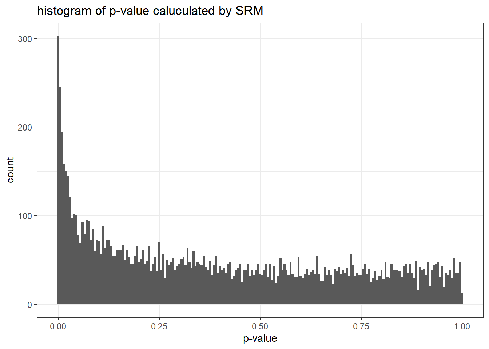

library(tidyverse)N <- 821588 + 815482
N## [1] 1637070trial_times = 10000
trial_times## [1] 10000p1.vec <- rep(NA, times = trial_times)for (i in 1:trial_times) {
set.seed(i)
n1 <- sum(sample(c(0, 1), size = N, replace = TRUE, prob = c(0.5, 0.5)))
# print(n1)
t <- prop.test(c(n1, N - n1), c(N, N), correct = FALSE)
# print(t$p.value)
p1.vec[i] <- t$p.value
}gragh_data <- p1.vec %>%
as_tibble() %>%
ggplot(aes(x = value))+
geom_histogram(binwidth = 0.005)+
labs(x = "p-value", y = "count", title = "histogram of p-value caluculated by SRM")+
theme_bw()
plot(gragh_data)
cnt_under_0.001 <- p1.vec %>%
as_tibble() %>%
mutate(
under_0.001 = if_else(value < 0.001, 1, 0)
) %>%
group_by(
under_0.001
) %>%
summarise(
under_0.001_cnt = sum(under_0.001)
) %>%
ungroup() %>%
.[2,2] %>%
as.numeric()## `summarise()` ungrouping output (override with `.groups` argument)cnt_under_0.001## [1] 185cnt_under_0.001 / trial_times## [1] 0.0185cnt_under_0.05 <- p1.vec %>%
as_tibble() %>%
mutate(
under_0.05 = if_else(value < 0.05, 1, 0)
) %>%
group_by(
under_0.05
) %>%
summarise(
under_0.05_cnt = sum(under_0.05)
) %>%
.[2,2] %>%
as.numeric()## `summarise()` ungrouping output (override with `.groups` argument)cnt_under_0.05## [1] 1656cnt_under_0.05 / trial_times## [1] 0.1656